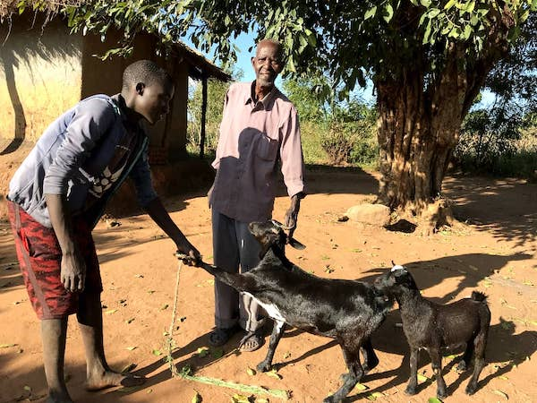

K2 TASO

K2 Tigwiranemanja AIDS Support Organisation (K2 TASO) is a non-governmental
organization (NGO) which has its secretariat in Mtunthama, rural Kasungueast,
Central Malawi. K2 TASO is working towards a more equitable future in which
everyone had access to quality healthcare, comprehensive education, good
nutrition, clean water, and a reliable income. We put a strong
emphasis on respecting human rights and contributing to the global fight
against climate change.
